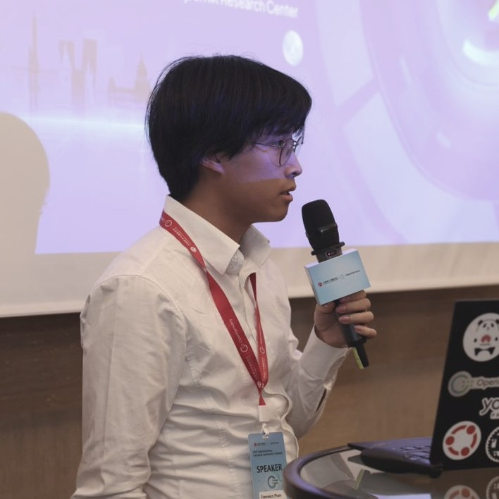

The Sun · eclipsed by the Moon
Total solar eclipse
- Date
- 12 August 2026
- Camera
- Nikon D5300
- Lens
- Tamron 70–300 mm
- Finish
- HDR merge, GIMP
Totality
The corona, the Sun's outer atmosphere, shows only while the Moon covers the whole disc.
45.69°N 11.71°E · Veneto, Italy
I bring open operating systems to hardware that wasn't built for them.
I lead Eclipse Oniro, the open-source project taking OpenHarmony to phones, tablets and boards for global markets, and I work as an open-source engineer with Huawei's European research centers. When the sky is clear, I'm outside with a small refractor.
whoami

I've been writing software since I was a kid and never really stopped taking things apart. I studied Computer Engineering at the University of Padua, with an Erasmus semester at the University of Bergen, and spent my theses on deep learning for depth sensing and 3D rendering.
Since 2021 I've worked on Eclipse Oniro, first as Committer Representative and now as PMC Lead. On a given day that means bringing up a new device, porting a framework or an app, building tools and CI for other developers, reviewing community contributions, and explaining all of it on stage.
I care about open governance and vendor-neutral foundations, and about Europe having a real say in the software its devices run, from digital sovereignty to regulation like the Cyber Resilience Act.
bring-up
Commercial phones ship with Android vendor drivers and nothing else. On the Volla Phone Plinius, OpenHarmony boots first on the phone's own Android 14 kernel and owns the device. Under OpenHarmony's standard hardware interface, one small plug-in per interface reaches the hardware by one of three routes: Android HALs loaded in-process through libhybris, vendor daemons in a Halium container, or code written straight against the kernel driver.
Built on the architecture of my first phone port, the Volla Phone X23. Also brought up: Volla Tablet · Raspberry Pi 4 (Yocto BSP) · QEMU emulator
2021 → now
PMC Lead of Eclipse Oniro, after serving as its Committer Representative. I lead engineering and community for an open mobile and IoT platform built on OpenHarmony, with a focus on privacy and EU regulatory compliance.
2019 → 2021
Summa cum laude, with an Erasmus exchange at the University of Bergen. Thesis on deep-learning level-of-detail selection for 3D applications, published at EUVIP 2022.
2016 → 2019
110/110. Thesis on fusing stereo and time-of-flight depth with a residual network, 7× more accurate than either sensor alone.
2015
A responsive web application with AngularJS and Node.js.
~/projects
Four constellations: devices I've ported to, the bridges that bring apps across, the tools I make for other developers, and the work that came before Oniro. Stars are named the way astronomers name them, brightest first. Pick one.
talks.log
How OpenHarmony reaches new hardware, told to open-source, research and community audiences across Europe. Slides for every talk are in frankplus/presentations.
I also mentor at hackathons such as HackaTUM in Munich, and demo Oniro hardware at events like Huawei Connect.
after dark
Away from the keyboard I photograph the sky with a small kit: a Skywatcher 72ED refractor with a focal reducer, a Star Adventurer tracking mount, a Tamron 70–300 mm lens, and a Nikon D5300.
I also take portraits and long telephoto shots of the Moon rising behind people, and keep a drawer of Raspberry Pis and microcontrollers.
The Sun · eclipsed by the Moon
Totality
The corona, the Sun's outer atmosphere, shows only while the Moon covers the whole disc.
Messier 31 · 2.5 million light-years
The nearest large galaxy to our own, with its companion galaxies, taken with a telephoto lens on a tracking mount.
The Moon · 8 days old, 61% lit
Along the terminator the sunlight comes in low, so crater walls and mountain ranges cast long shadows.
The Moon · 13 days old, 98% lit
Shot from far away through the 72ED, which makes the Moon look huge beside a person. At that focal length the person and the Moon can't both be sharp, so this is two frames, one focused on each, blended into one.
contact
Happy to talk about OpenHarmony, porting, open-source governance, or whatever you photographed last night.